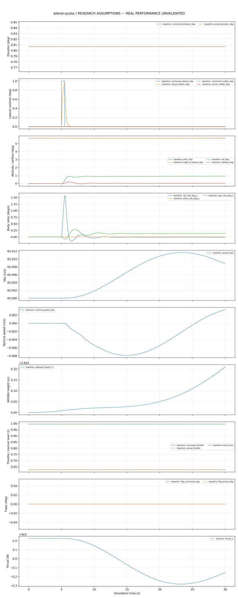

Research assumptions. Real aircraft performance unvalidated.
COMPLETE

{
"status": "COMPLETE",
"baseline": "artifacts\\flight-tests\\aileron-pulse",
"candidate": null,
"conditions": {
"schema_version": 1,
"case": "aileron-pulse",
"duration_s": 30,
"sample_dt_s": 0.02,
"created_utc": "2026-11-17T10:56:09.624374+00:00",
"events": [
{
"time_s": 5,
"kind": "surface",
"axis": "aileron",
"delta_deg": 1
},
{
"time_s": 5.5,
"kind": "trim-controls"
}
],
"research_warning": "Development assumptions; real aircraft performance unvalidated",
"iy_scale": 1,
"units": "SI lengths/speeds/forces; API angles deg, body FRD rates deg/s; WGS84 ellipsoid height; heading clockwise from North",
"original_profile_sha256": "f55993c2f5515eed550f7c4f44211525ac7a7924de412fa448151393265c7c32",
"profile_sha256": "f55993c2f5515eed550f7c4f44211525ac7a7924de412fa448151393265c7c32",
"source_sha256": {
"Source\\FlightCore\\Aerodynamics.h": "a974e8cc1d8a6153571eafe0cac6dcdd6f41cbd187258e68db2b9380fc6c5080",
"Source\\FlightCore\\AircraftParameters.h": "fa1b41111df62ad1ffdf487820d5c3324d2d92f1557f3e28903d43196a688e40",
"Source\\FlightCore\\FixedWing.h": "4daa10a71f4bd21791a78af00cca9a540e96c1754890fdba259664af610722bb",
"Source\\FlightCore\\FlightCore.h": "b0e8be3da168f8cf9b2ebdd933a451739bf3fd441c489c264935fa1466d7eeaf",
"Source\\FlightCore\\FlightOperations.h": "b35eeb0148a97fe79c888adead41d5f3c909e666ad8d99a8a806e164fc1251b9",
"Source\\FlightCore\\Gimbal.h": "d0a56b0be552959869c586b0058a7a341f1236e6557282ff123781b43f7804e3",
"Source\\FlightCore\\GroundContact.h": "be44eb4343a648ca0cdb5c4c4203568016ab0e9f5a45363e3eae72b12411bec1",
"Source\\FlightCore\\Navigation.h": "5a253e1c3a89adaccdb71a66601e8b23684373862457f72f1d09357881b19dcd",
"Source\\FlightCore\\StlMesh.h": "745536d0362558ad51f2fbb0231bd80f915242a0c80e876d5e2473e081772126",
"Source\\FlightCore\\TerrainSurface.h": "1540150b3d1b81ed4f1238f0ccda68f1528c914e7cc87b0695e40c698f74bb72",
"uavsim_client.py": "687c63b2720b62bb1d39b70d40f0dd2b1eac0426764e3fef0900f84e7adfec00",
"scripts\\run-flight-test.py": "dda7b7572ebd0f6ee9aea48eaa0d0bf9e4a54d310e304b0f32c4cf30c0e9ee84",
"scripts\\serve-api.py": "66c70eadc52b6646c5dd1f3629c7f3470113130f3e199586fcec113a47dabdaa",
"scripts\\report-flight-test.py": "f5d4dc0cb90e4bca66b837eb83dddacd2f09ad755c90d8cdcaefb70b0ba009f1",
"Binaries\\Win64\\UnrealEditor-UAVSim.dll": "0c5257ae53bf600e363cb549f5da3b74ef745f36e47d8ec38f92bdb147690ddc"
},
"airframe": {
"id": "c208b-research-assumptions",
"profile": "aircraft/c208b-research.json",
"fingerprint": "sha1:22c052f02c9fe9fd99862d739713b18ee7ae4d23",
"error": "",
"schema_version": 2,
"initial_speed_mps": 65,
"initial_height_m": 2600,
"minimum_speed_mps": 0,
"maximum_speed_mps": 110,
"minimum_height_m": -500,
"maximum_height_m": 6000,
"maximum_alpha_deg": 180,
"maximum_beta_deg": 89,
"ground_supported": true,
"navigation_supported": true,
"automation_supported": true,
"support_message": "C208B research model: estimated inertia, propulsion, low-speed aerodynamics, gear and controller. REAL AIRCRAFT PERFORMANCE UNVALIDATED.",
"retractable_gear": false,
"route_minimum_speed_mps": 36,
"route_maximum_speed_mps": 75,
"landing_minimum_speed_mps": 36,
"landing_maximum_speed_mps": 44,
"maximum_flap_deg": 30
},
"initial_condition": {
"aircraft": {
"latitude_deg": 33.43299999999999,
"longitude_deg": 126.52,
"ellipsoid_height_m": 2599.9999999990687,
"heading_deg": 0,
"pitch_deg": 5.680213701137778,
"roll_deg": 0,
"simulation_time_s": 0,
"running": false,
"terrain_loaded": true,
"speed_mps": 65,
"vertical_speed_mps": -4.3021142204224816e-16,
"time_scale": 1,
"effective_time_scale": 0,
"distance_travelled_m": 0,
"roll_rate_deg_s": 0,
"pitch_rate_deg_s": 0,
"yaw_rate_deg_s": 0,
"angle_of_attack_deg": 5.680213701137778,
"sideslip_deg": 0,
"ground_speed_mps": 65,
"air_density_kg_m3": 0.9472641688488673,
"dynamic_pressure_pa": 2001.0955566932323,
"lift_coefficient": 0.7137272220601639,
"drag_coefficient": 0.05747032737548593,
"flow_separation": 0,
"stall_warning": false,
"stalled": false,
"load_factor": 0.995089809318127
},
"controls": {
"elevator_deg": 0.8068392946712832,
"aileron_deg": 0,
"rudder_deg": 0,
"throttle": 0.6262852500712698
},
"actuators": {
"elevator_deg": 0.8068392946712832,
"aileron_deg": 0,
"rudder_deg": 0,
"throttle": 0.6262852500712698,
"thrust_n": 3000.2255705424304
},
"flaps": {
"command_deg": 0,
"actual_deg": 0
},
"gear": {
"command_down": true,
"extension": 1,
"down_locked": true,
"up_locked": false,
"moving": false
},
"environment": {
"wind_east_mps": 0,
"wind_north_mps": 0,
"wind_up_mps": 0
}
},
"trim_controls": {
"elevator_deg": 0.8068392946712832,
"aileron_deg": 0,
"rudder_deg": 0,
"throttle": 0.6262852500712698
},
"elapsed_wall_s": 85.05188700000144
},
"candidate_conditions": null,
"result": {
"ok": true,
"checks": [
"finite samples, exact time grid, profile and controller isolation"
],
"restore_errors": [],
"samples": 1501,
"status": "complete",
"final_state": {
"aircraft": {
"latitude_deg": 33.45056912169915,
"longitude_deg": 126.52045001282251,
"ellipsoid_height_m": 2600.209622627124,
"heading_deg": 3.143800399362533,
"pitch_deg": 5.681749849623565,
"roll_deg": 0.9245673182105499,
"simulation_time_s": 29.99999999999945,
"running": false,
"terrain_loaded": true,
"speed_mps": 65.00877495933621,
"vertical_speed_mps": 0.0033012761672169266,
"time_scale": 1,
"effective_time_scale": 0,
"distance_travelled_m": 1950.1769013753744,
"roll_rate_deg_s": -0.010714292198784059,
"pitch_rate_deg_s": 0.002536290628904925,
"yaw_rate_deg_s": 0.13099275799199106,
"angle_of_attack_deg": 5.6790663566964295,
"sideslip_deg": 0.03166538803683713,
"ground_speed_mps": 65.0087748755135,
"air_density_kg_m3": 0.9472727982046676,
"dynamic_pressure_pa": 2001.6541208958163,
"lift_coefficient": 0.7136428367473265,
"drag_coefficient": 0.05746448818536705,
"flow_separation": 0,
"stall_warning": false,
"stalled": false,
"load_factor": 0.9952503446610511
},
"controls": {
"elevator_deg": 0.8068392946712832,
"aileron_deg": 0,
"rudder_deg": 0,
"throttle": 0.6262852500712698
},
"ground": {
"steering_deg": 0,
"brake": 0,
"parking_brake": false,
"on_ground": false,
"wheels_on_ground": 0,
"height_agl_m": 2285.4802884974833,
"terrain_height_m": 306.6014684503898,
"normal_force_n": 0,
"impact_speed_mps": 0,
"crashed": false,
"surface": "terrain",
"available": true
},
"gear": {
"command_down": true,
"extension": 1,
"down_locked": true,
"up_locked": false,
"moving": false
},
"automation": {
"phase": "idle",
"kind": "none",
"runway_index": -1,
"runway_name": "",
"completed": false,
"message": "Inactive",
"cross_track_m": 0,
"along_track_m": 0,
"target_height_m": 0
},
"actuators": {
"elevator_deg": 0.8068392946712832,
"aileron_deg": 1.1206203421316965e-71,
"rudder_deg": 0,
"throttle": 0.6262852500712698,
"thrust_n": 2999.8479243050324
},
"airframe": {
"id": "c208b-research-assumptions",
"profile": "aircraft/c208b-research.json",
"fingerprint": "sha1:22c052f02c9fe9fd99862d739713b18ee7ae4d23",
"error": "",
"schema_version": 2,
"initial_speed_mps": 65,
"initial_height_m": 2600,
"minimum_speed_mps": 0,
"maximum_speed_mps": 110,
"minimum_height_m": -500,
"maximum_height_m": 6000,
"maximum_alpha_deg": 180,
"maximum_beta_deg": 89,
"ground_supported": true,
"navigation_supported": true,
"automation_supported": true,
"support_message": "C208B research model: estimated inertia, propulsion, low-speed aerodynamics, gear and controller. REAL AIRCRAFT PERFORMANCE UNVALIDATED.",
"retractable_gear": false,
"route_minimum_speed_mps": 36,
"route_maximum_speed_mps": 75,
"landing_minimum_speed_mps": 36,
"landing_maximum_speed_mps": 44,
"maximum_flap_deg": 30
},
"flaps": {
"command_deg": 0,
"actual_deg": 0
},
"visual": {
"source": "builtin",
"config": "aircraft/visual.json",
"mesh": "",
"triangle_count": 0,
"span_m": 15.85,
"fingerprint": "sha1:31eec5e362e4e61ee3884fef27312c28760f59b0",
"error": "",
"show_builtin_gear": true
},
"eoir": {
"enabled": false,
"mode": "ccd",
"fov_deg": 30,
"azimuth_deg": 0,
"elevation_deg": -45,
"gimbal_mode": "body_fixed",
"point_latitude_deg": 0,
"point_longitude_deg": 0,
"point_ellipsoid_height_m": 0,
"target_id": "",
"tracking_status": "manual",
"limited": false,
"target_in_fov": false,
"error_deg": 0,
"frame_sequence": 0,
"error": ""
},
"targets": [],
"wargame": {
"time_s": 267.19000000003786,
"error": "",
"weapons": [
{
"id": "training-marker",
"label": "Sim projectile",
"mesh": "models/example.stl",
"animation_duration_s": 5,
"triangle_count": 144
}
],
"shots": []
},
"disturbance": {
"engine_power_fraction": 1,
"elevator_jammed": false,
"aileron_jammed": false,
"rudder_jammed": false,
"gust_east_mps": 0,
"gust_north_mps": 0,
"gust_up_mps": 0,
"gust_start_s": 0,
"gust_duration_s": 0,
"effective_wind_east_mps": 0,
"effective_wind_north_mps": 0,
"effective_wind_up_mps": 0
},
"navigation": {
"mode": "manual",
"stall_recovery": false,
"active_waypoint_index": -1,
"waypoint_count": 0,
"distance_to_waypoint_m": 0,
"loiter_radius_m": 0
},
"environment": {
"wind_east_mps": 0,
"wind_north_mps": 0,
"wind_up_mps": 0
},
"view_mode": "aircraft",
"terrain": {
"dataset": "korea",
"tile_count": 50,
"manifest": "korea/terrain.json",
"attribution": "EOxCloudless https://cloudless.eox.at by EOX IT Services GmbH (Contains modified Copernicus Sentinel data 2016 & 2017)\nContains modified Copernicus Sentinel data 2025; Copernicus DEM GLO-30.\nJeju detail: modified Copernicus Sentinel-2 data 2025-04-06.",
"error": ""
},
"object_path": "/Game/Maps/JejuDemo.JejuDemo:PersistentLevel.FlightScene_0",
"model": "thor_nonlinear_6dof_v2",
"fault": ""
},
"restored_airframe": {
"id": "c208b-research-assumptions",
"profile": "aircraft/c208b-research.json",
"fingerprint": "sha1:22c052f02c9fe9fd99862d739713b18ee7ae4d23",
"error": "",
"schema_version": 2,
"initial_speed_mps": 65,
"initial_height_m": 2600,
"minimum_speed_mps": 0,
"maximum_speed_mps": 110,
"minimum_height_m": -500,
"maximum_height_m": 6000,
"maximum_alpha_deg": 180,
"maximum_beta_deg": 89,
"ground_supported": true,
"navigation_supported": true,
"automation_supported": true,
"support_message": "C208B research model: estimated inertia, propulsion, low-speed aerodynamics, gear and controller. REAL AIRCRAFT PERFORMANCE UNVALIDATED.",
"retractable_gear": false,
"route_minimum_speed_mps": 36,
"route_maximum_speed_mps": 75,
"landing_minimum_speed_mps": 36,
"landing_maximum_speed_mps": 44,
"maximum_flap_deg": 30
},
"restore_contract": "Selector bytes and wind restored; original profile paused at airborne trim. Previous dynamic state/time NOT restored."
},
"metrics": {
"speed_mps": {
"minimum": 64.99999999999996,
"maximum": 65.01165775338393,
"peak_absolute": 65.01165775338393,
"peak_time_s": 23.35999999999959,
"change": 0.008774959336207644
},
"ellipsoid_height_m": {
"minimum": 2599.9999999990687,
"maximum": 2600.209622627124,
"peak_absolute": 2600.209622627124,
"peak_time_s": 29.99999999999945,
"change": 0.2096226280555129
},
"pitch_deg": {
"minimum": 5.672072906568086,
"maximum": 5.681749849623565,
"peak_absolute": 5.681749849623565,
"peak_time_s": 29.99999999999945,
"change": 0.0015361484857869812
},
"angle_of_attack_deg": {
"minimum": 5.678813972532319,
"maximum": 5.680213701137778,
"peak_absolute": 5.680213701137778,
"peak_time_s": 0.0,
"change": -0.0011473444413487854
},
"roll_deg": {
"minimum": 0.0,
"maximum": 0.9245673182105499,
"peak_absolute": 0.9245673182105499,
"peak_time_s": 29.99999999999945,
"change": 0.9245673182105499
},
"sideslip_deg": {
"minimum": -0.03542937891615928,
"maximum": 0.18499688566288575,
"peak_absolute": 0.18499688566288575,
"peak_time_s": 6.179999999999956,
"change": 0.03166538803683713
},
"roll_rate_deg_s": {
"minimum": -0.15604168200672783,
"maximum": 1.583334315222209,
"peak_absolute": 1.583334315222209,
"peak_time_s": 5.51999999999997,
"change": -0.010714292198784059
},
"pitch_rate_deg_s": {
"minimum": -0.0004422115085976269,
"maximum": 0.00297716263386243,
"peak_absolute": 0.00297716263386243,
"peak_time_s": 24.079999999999576,
"change": 0.002536290628904925
},
"yaw_rate_deg_s": {
"minimum": -0.08632315835782266,
"maximum": 0.29385139276303246,
"peak_absolute": 0.29385139276303246,
"peak_time_s": 7.019999999999938,
"change": 0.13099275799199106
}
},
"comparison": null,
"coordinated_turn": null
}